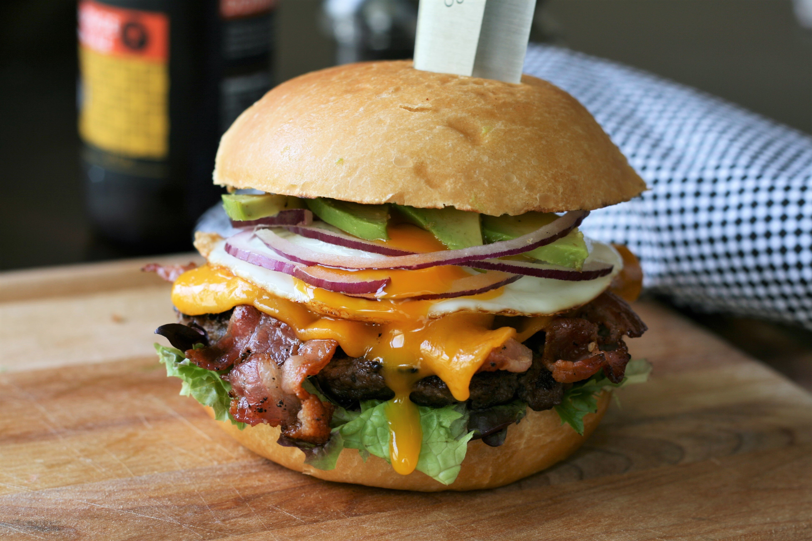

burger

what makes burger tasty?
The best burgers offer a combination of tastes and textures – sweet, sour, salt – with a bit of crunch.
The patty needs to be juicy, the bun soft but sturdy, and
you want the meat/bun/accompaniment ratio to be even from first to last bite.
INGRIDIENTS
- 3 tablespoons salted butter, softend
- 4 hamburger buns, split
- 8 slices thick-cut bacon
Steps
- Preheat an outdoor grill for medium-high heat and lightly oil the grate. Butter each half of hamburger buns.
- Place bacon in a heavy skillet and cook over medium-high heat, turning occasionally, until crisp, 10 to 12 minutes. Drain bacon slices on paper towels. Set the skillet aside, reserving grease.
- Place bacon in a heavy skillet and cook over medium-high heat, turning occasionally, until crisp, 10 to 12 minutes. Drain bacon slices on paper towels. Set the skillet aside, reserving grease.
- Grill patties on the preheated grill until preferred doneness, about 6 minutes per side. An instant-read thermometer inserted into the center should read at least 160 degrees F (71 degrees C). Top each burger with 2 slices bacon and a Cheddar cheese slice; close the grill lid until cheese is melted, about 1 minute.
Remove patties from the grill.
- Place buns on the grill, buttered-side down, and cook until browned, about 1 minute. Remove from the grill. Place 1 patty on the bottom half of each bun.
- Reheat the bacon grease in the skillet over medium-high heat.
Crack eggs into the hot skillet and fry until whites are cooked but yolk is still runny, about 4 minutes. Immediately place 1 egg on top of each patty. Top with lettuce, onion, avocado, and remaining buns.